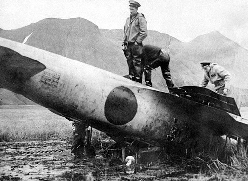
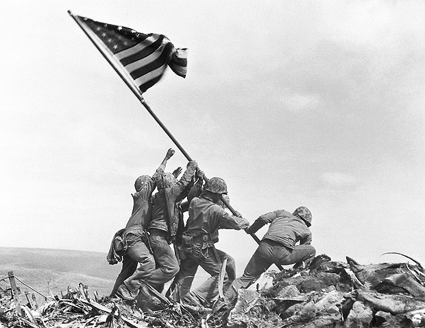

A guerra no pacífico
Começou um pouco antes de 1939, com investidas japonesas contra países asiáticos considerados “inferiores” por eles. O império japonês estava em seu auge, e contava com um grande efetivo de soldados para a época, que tinham o dever de lutar pela sua pátria e fazer do Japão um grande império.
As invasões eram feitas com tamanha brutalidade, com os japoneses executando e cometendo crimes sexuais contra civis, fazendo com que estes odiassem profundamente sua presença naquele local. Suas invasões também serviam para a captação de recursos naturais, que eram essenciais para a manutenção de suas forças. Avançaram também para o sul, onde encontraram resistência de britânicos e australianos que protegiam aqueles locais. Com uma estratégia militar que era eficiente, acabavam por derrotar grandes linhas defensivas inimigas, desse modo, aumentando a moral do exército, que decidiu encarar um desafio ainda maior.
Após sanções sofridas pelos Estados Unidos, por conta de suas ações expansionistas, o Japão decidiu retaliar com ataques diretamente ao território americano. Foi assim que planejaram um ataque que ficaria eternizado na história americana.
Pearl Harbor
Imediatamente após o ataque, Washington declarou guerra ao Japão. Não só ao Japão, e logo em seguida, prepararam uma força colossal e uma contra-inteligência para conter o avanço japonês e iniciar uma contra-ofensiva que fizesse o Japão se arrepender por cada ataque.
Alguns dias após o ataque, os Estados Unidos interceptaram uma ordem de ataque ao atol de Midway, nos mesmos moldes do ataque realizado anteriormente. Sabendo disso, os americanos fizeram questão de se preparar para a batalha, mobilizando porta-aviões, encouraçados, infantaria e sua força aérea. Quando o ataque começou, houve uma resposta avassaladora, que acabou surpreendendo o exército e força aérea imperiais, fazendo com que tivessem pesadas baixas e tivessem que recuar.
Quando estavam recuando e planejando uma retaliação, foram surpreendidos novamente com a máquina de guerra americana, desse modo, ficaram sem opções e acabaram por ser massacrados novamente.
Ofensiva brutal
Os americanos também avançaram por terra, onde tinham de lidar em terrenos tropicais, com uma selva densa, sem qualquer tipo de experiência, por isso a ação foi mais lenta se comparada às outras. Foram avançando com dificuldade até as ilhas marianas, onde ocorreram batalhas decisivas que aceleraram o fim da guerra.
Os japoneses, porém, não pensavam em se render, pois tinham em mente que seria ruim para a pátria. Então, os líderes militares começaram a convocar jovens para entrar em aviões suicidas, com muitas cargas explosivas, com o objetivo de parar a esquadra americana que rumava para seu território. Apesar de cruel, o ataque conseguiu retardar o avanço em algumas frentes. Cerca de 900 aviões foram jogados contra os navios, dos quais 11 foram afundados e 22 danificados.
Mesmo após o ataque, os EUA continuaram atacando ferozmente. Além de bombardear cidades para diminuir a moral do povo japonês, obtiveram progresso quando estavam avançando por terra. Foi em uma dessas batalhas, mais especificamente em Iwo Jima, que foi registrada um momento icônico para a segunda guerra.
Fim dramático
Apesar de quase derrotados, os japoneses queriam dar um fim à guerra, contudo sem a presença de uma rendição incondicional. Assim, o governo americano tinha em sua mesa várias opções que poderiam fazer com que esse processo fosse mais rápido. Incentivar os russos a invadir a manchúria, invadir o japão ou usar sua bomba atômica.
A última opção foi escolhida. Duas vezes.
40 mil mortos em Hiroshima, pela bomba “Little Boy” e 80 mil em Nagasaki, pela bomba “Fat Man” (considerando apenas o ano de 1945). Foi um dos piores momentos para o Japão em toda a sua história. 3 dias depois foi assinada a rendição oficial, a custa de muito sangue.
E assim, terminou a maior grande guerra que o planeta terra já viu, com mais de 60 milhões de mortos no total, e deixando uma cicatriz na humanidade, além de uma lição para todos que um conflito, principalmente armado, nunca é uma solução.